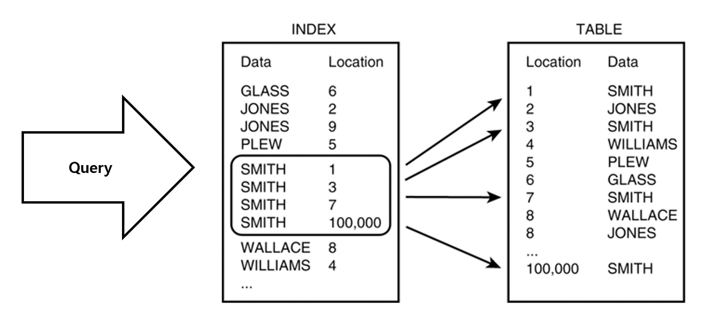
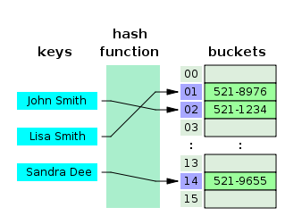
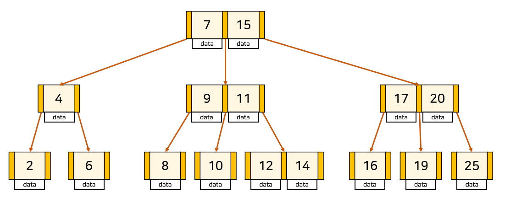

인덱스(Index)¶
1절. 인덱스
2절. 해시 테이블
3절. B+Tree
4절. B+Tree의 SELECT, INSERT, DELETE
1절. 인덱스¶
인덱스(Index)¶

- DB 테이블에 대한 검색 속도를 향상시키는 자료구조
- 해시 테이블
- B+Tree
- 테이블의 특정 컬럼을 정렬해 별도의 저장 공간에 데이터의 물리적 주소와 함께 저장
- 컬럼 값 + 물리적 주소가 한 쌍(key, value)으로 저장
- 원본 테이블은 그대로 두고 검색용 사본 하나 더 생성
인덱스 비유¶
| 데이터 | 인덱스 | 물리적 주소 |
|---|---|---|
| 책의 내용 | 책의 목차 | 책의 페이지 번호 |
사용 이유¶
- 정렬된 구조에서 필요한 위치로 빠르게 접근하는 용도
장점¶
- 조회 속도 향상(풀 테이블 스캔 회피)
- 정렬된 구조로 범위 검색과 ORDER BY에 유리
단점¶
- 추가 저장 공간 필요
- 쓰기 작업 시 인덱스도 갱신되어 비용 증가
- 사용 빈도가 낮거나 중복 값이 많으면 손해
DML 별 영향¶
| DML | 상황 |
|---|---|
| SELECT | 조회 속도 향상 |
| INSERT | 느려짐 : 새 키 값을 정렬 위치에 삽입 필요 |
| UPDATE | 대상 조회는 빨라지나 인덱스 키 컬럼 수정 시 기존 항목 제거 + 새 위치 삽입 |
| DELETE | 대상 조회는 빨라지나 인덱스 항목 제거 필요 |
인덱스 사용이 용이한 경우¶
- 규모가 큰 테이블
- 데이터의 선택도가 높은(중복 값이 적은) 컬럼
- 조회가 많거나 정렬된 상태가 유용한 컬럼
- WHERE이나 ORDER BY, JOIN 등이 자주 발생하는 컬럼
2절. 해시 테이블¶
해시 테이블(Hash Table)¶

- (key, value) 로 데이터를 저장하는 자료구조
- (key, value) = (컬럼 값, 데이터 위치)
- 빠른 데이터 검색 시 유용
- key를 해시 함수에 넣어 버킷 위치 계산
- 평균 O(1)의 매우 빠른 시간에 원하는 데이터 탐색 가능
해시 테이블을 기본 구조로 사용하지 않는 이유¶
- 등호(=) 연산에 최적화된 구조
- 데이터 미정렬로 부등호(<, >) 연산과 범위 검색 불가
- DB는 부등호 연산과 ORDER BY가 빈번
3절. B+Tree¶
B+Tree¶

- B-Tree를 개선한 자료구조
장점¶
- 리프 노드에만 행 위치 정보를 저장하므로 중간 노드가 가벼워짐
- 하나의 node가 많은 포인터를 가져 트리의 높이가 낮아지므로 검색속도 향상
- Full Scan의 경우 리프 노드만 순차 탐색
- 리프 노드끼리 연결 리스트로 이어져 있어 선형 시간에 전체 순회 가능
단점¶
- 특정 key에 접근하기 위해 리프 노드까지 도달 필요
- 반면 B-Tree는 루트나 중간 노드에도 데이터가 있어 최상의 경우 특정 key를 루트 노드에서 탐색 가능
B+Tree와 B-Tree의 차이점¶
- 아래 사진은 B-Tree

| 구분 | B+Tree | B-Tree |
|---|---|---|
| 행 위치 정보 | 리프 노드만 저장 | 모든 노드가 저장 |
| 중간 노드 역할 | 탐색 경로 안내용 키만 보유 | 키 + 행 위치 정보 |
| 노드 당 키 개수 | 중간 노드가 가벼워 더 많이 저장 가능 | 상대적으로 적음 |
| 트리 높이 | 상대적으로 낮음 | 상대적으로 높음 |
| 리프 노드 연결 | 연결 리스트로 연결 | X |
| 전체 순회 | 리프 노드만 순차 탐색 | 모든 노드 방문 필요 |
| 범위 검색 | 시작 지점 탐색 후 순차 탐색 | 비효율적 |
B+Tree 사용 이유¶
- 인덱스 컬럼은 부등호(<, >)를 이용한 순차 검색 연산이 자주 발생하기 때문
- B+Tree의 연결 리스트로 효율적인 순차 검색 가능
4절. B+Tree의 SELECT, INSERT, DELETE¶
SELECT¶
- 단일 key 탐색은 B-Tree와 동일
- 루트에서 시작해 key 값을 비교하며 리프 노드로 이동
- 단, B+Tree의 경우 데이터가 리프에만 있어 반드시 리프까지 도달 필요
- 범위 탐색
- 시작 지점의 리프 노드를 탐색한 후 연결 리스트를 따라 순차 탐색
INSERT¶
- B-Tree와 비슷한 로직
- 추가는 항상 리프 노드
- 노드가 넘치는 경우
- 가운데 key 기준으로 좌우 key들을 분할
- 가운데 key는 승진
| 분할 상황 | 설명 | 이유 |
|---|---|---|
| 리프 노드 분할 |
부모에도 자식에도 동시 존재 | 데이터는 리프 노드에만 존재 |
| 중간 노드 분할 |
사본 없이 부모로 이동 | 중간 노드의 key는 데이터가 아닌 경로 안내용 |
INSERT 예시¶
차수 : 3
45 삽입 시 연쇄적인 분할 발생 예시

DELETE¶
- B+Tree 조건 확인 후 재조정
- M : 최대 자식 수(차수)
- 노드에는 최대 M개의 자식 존재
- 노드에는 최대 M - 1개의 Key 존재
- 노드에는 최소 M / 2개의 자식 노드 존재
- 루트를 제외한 노드에는 최소 M/2 - 1개의 key 존재
- 삭제한 키가 internal node의 인덱스로 존재할 경우 다른 key로 대체 필요
DELETE 예시 1¶
삭제 대상 : 40
삭제할 대상의 인덱스가 없고 재조정이 필요 없는 경우
삭제 후에도 최소 개수 조건을 만족해 재조정이 발생하지 않음

DELETE 예시 2¶
삭제 대상 : 5
삭제할 대상의 인덱스가 없지만 재조정이 필요한 경우
최소 개수 조건을 만족하지 않아 재조정 발생
형제 노드로부터 데이터를 빌려 조건에 맞게 인덱스 업데이트

DELETE 예시 3¶
삭제 대상 : 45
삭제할 대상의 인덱스가 있고 삭제 후 재조정이 필요 없는 경우
최소 개수가 만족되므로 재조정 필요 없음
삭제된 인덱스 대신 같은 노드 안의 key 인덱싱

DELETE 예시 4¶
삭제 대상 : 35
삭제할 대상의 인덱스가 있고 재조정이 필요한 경우
재조정이 발생해 형제 노드로부터 데이터를 빌림
삭제된 인덱스에는 빌린 데이터의 key 인덱싱

DELETE 예시 5¶
삭제 대상 : 25
삭제할 대상의 인덱스가 부모 노드이고 재조정이 필요한 경우
리프 노드에서는 형제도 충분한 개수를 가지지 않아 병합 필요
삭제된 인덱스에는 중위 계승자(정렬 순서상 다음 key)로 대체

DELETE 예시 6¶
삭제 대상 : 55
트리의 높이가 줄어드는 경우
55 key와 인덱스 삭제

- 리프 노드 재조정
- 형제 노드로부터 데이터를 빌릴 수 있는지 확인
- 빌릴 수 없으므로 형제 노드와 병합
- 인덱싱 재조정
- 형제 노드로부터 인덱스를 빌릴 수 있는지 확인
- 빌릴 수 없어 부모 노드로부터 빌릴 수 있는지 확인
- 빌릴 수 없어 부모와 형제 병합